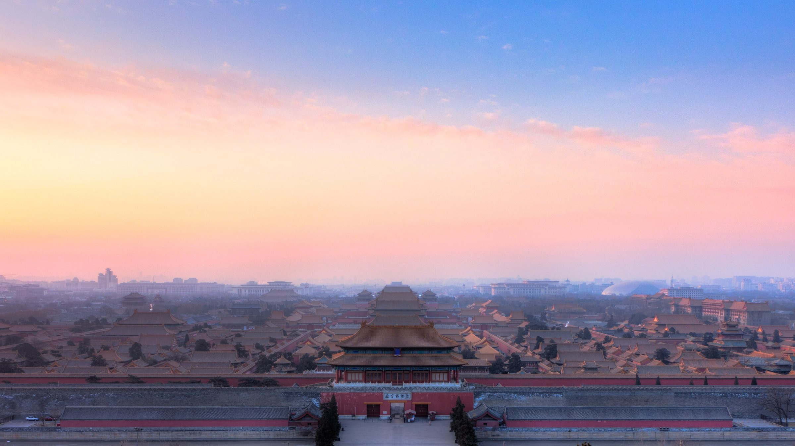

The Forbidden City
The imperial palace still occupies the heart of the city: yellow roofs in ranks, courtyards opening one into the next, and a scale that is best understood on foot. Come early, and give it a morning rather than an hour.

In Beijing the older China and the present one share the same streets. You can spend a morning under the yellow roofs of the Forbidden City, an afternoon in the planted walks of the Summer Palace, and still have time for the Temple of Heaven, or the quieter courts of White Cloud Temple. Tiananmen Square keeps its ceremonial scale, but also its ordinary life — kites in the air, the changing of the guard, people passing through as if it were a park. In the hutongs that remain, and in those that have been remade, you find teahouses, small bars and design shops in the shadow of much taller buildings. It is a city that holds more than one century at once, and a natural door to the north.
Departing from Beijing, there is no shortage of travel inspiration: Pingyao, Chengde, Datong — so many stops in a lesser-known China.
From the capital you can also follow the Wall east until it meets the sea at Shanhaiguan, the old pass where China once watched the tide. Farther on, in the forests of Jilin, Changbai Mountain rises to a crater lake so still it holds the sky — Heaven Lake, a place that feels a world away from Beijing, and yet belongs to the same north.
Spring and autumn are the months when Beijing is at its most generous: clear light, comfortable days, and the best walking on the Wall and in the old parks. Winter is sharp and dry, with fewer visitors; summer is hot, and the city can feel close.
| City | 1Jan | 2Feb | 3Mar | 4Apr | 5May | 6Jun | 7Jul | 8Aug | 9Sep | 10Oct | 11Nov | 12Dec |
|---|---|---|---|---|---|---|---|---|---|---|---|---|
| Beijing |
Beijing is served by two international airports: Capital (PEK), about 25 kilometres from the centre, and Daxing (PKX), farther south. Both have express rail, airport buses and taxis into the city.
Beijing is one of the main hubs of China’s high-speed rail network. Beijing South handles most high-speed services; Beijing Railway Station and Beijing West serve a mix of fast and conventional trains. Book ahead in peak seasons, especially around Chinese New Year and the October holiday.
The subway is the most reliable way through the city. Didi, the local ride-hailing service, is widely used; ordinary taxis are plentiful if you have the destination written in Chinese. For short distances, shared bicycles are easy to pick up. A hired car is more useful for days outside the city than for getting around within it.
April to June, and again in September and October, are the most comfortable months: mild weather, clearer air, and the parks at their best — blossom in spring, and the Fragrant Hills in colour in autumn. July and August can be hot and crowded. Winter is cold, sometimes well below freezing, but the palaces and the Wall are quieter, and the city has a particular clarity on a bright, dry day.
The imperial palace still occupies the heart of the city: yellow roofs in ranks, courtyards opening one into the next, and a scale that is best understood on foot. Come early, and give it a morning rather than an hour.
Within a day’s reach of the capital, the Wall rises and falls along the ridges. Badaling is the most visited; Mutianyu and Jinshanling are quieter, and better for a long walk, with watchtowers opening onto the hills.
A ceremonial park of the Ming and Qing, where emperors once prayed for the harvest. The Hall of Prayer still holds the centre, and in the grounds around it you will find Beijingers at tai chi, with kites, or practising calligraphy with water on the stones.
Northwest of the centre, Kunming Lake and Longevity Hill form one of the great imperial gardens: a long painted corridor, a stone boat at the water’s edge, and walks that feel far from the traffic of the city.
The old lane neighbourhoods that remain — and those that have been remade — are where Beijing’s everyday life is still close at hand: courtyard houses, bicycles, small restaurants, and the sense of a city lived in rather than merely visited.
From Beijing, the way still leads inward — to Wudang, and to Zhuxi — or north, toward a lesser-known China.